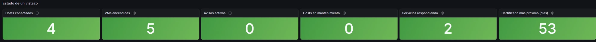

Empezando por el final: para qué sirve todo esto
Un laboratorio sin usuarios es un juguete. Estos servicios los usa gente que no sabe ni que existe un clúster detrás, y esa es la prueba de que funciona.
| Servicio | Quién lo usa | Qué exige | Estado |
|---|---|---|---|
| Vídeo bajo demanda | Familia, desde casa y desde fuera, en móvil y en televisión | Que funcione abriendo la app, sin VPN ni configuraciones. Son personas mayores | En servicio |
| Sincronización de notas | Yo, entre portátil, móvil y tableta | Al instante y cifrada en origen: ahí vive la documentación del laboratorio | En servicio |
| Dominio y nombres internos | Los propios servidores y el equipo de administración | Resolver nombres y autenticar; es la pieza de la que dependen las demás | En servicio |
| Almacén de archivos para la familia | Unas diez personas, fuera de casa | Subir y descargar documentos personales, con cuotas y copia de seguridad | Planificado |
Tener usuarios reales cambia las decisiones. Nada de "lo arreglo el fin de semana": los cambios se hacen con una vuelta atrás preparada, a horas en las que nadie mira una película, y comprobando después que el servicio sigue respondiendo desde internet, no solo desde mi mesa.
Lo que corre encima del clúster
Cinco máquinas, cada una con un trabajo. Todas viven en el almacenamiento compartido, así que cualquiera puede arrancar en cualquier host.
Gestión del clúster
Gobierna los cuatro hosts como un único clúster: alta disponibilidad, reparto de carga y migración en caliente. Curiosidad: es una máquina virtual del propio clúster, así que se migra a sí misma cuando hay que vaciar su host.
Dominio y DNS interno
Controlador de dominio y servidor de nombres del laboratorio. Es el punto único de fallo que más me preocupa: un segundo controlador está en la lista. El segmento expuesto a internet no lo usa, a propósito.
Proxy de publicación
La única pieza que escucha desde internet. Descifra el tráfico, lo reenvía a quien corresponde y nada más: una lista de control en el switch le impide hablar con el resto del laboratorio.
Servidor multimedia
Sirve el vídeo a la familia. Su sistema y su caché van en disco rápido; la biblioteca la monta por red desde el nodo de almacenamiento, y además en solo lectura: si alguien entrara por el servicio publicado, no podría borrar la colección.
Servidor de contenedores
La casa común de los servicios internos pequeños, cada uno en su propia definición. El primero fue la base de datos que sincroniza mis notas; el segundo, toda la vigilancia del laboratorio. Añadir el siguiente es escribir unas líneas más, no levantar otra máquina.
El clúster despliega por su cuenta una máquina de servicios internos, diminuta, que mantiene vivo el reparto de carga aunque la gestión se caiga. No se renombra, no se apaga y no se borra: si desaparece, el clúster la vuelve a crear.
Siete cajas y ningún servidor de rack
Todo es hardware de oficina reacondicionado, silencioso y de bajo consumo. Ninguna pieza salió de una tienda lista para usar.
| Equipo | Qué hace | Lo que lleva dentro | Estado |
|---|---|---|---|
| Hosts 1 a 4 | Nodos del clúster: ejecutan las máquinas virtuales | 6 núcleos / 12 hilos · 64 GB · NVMe 500 GB · 5 × 1 GbE | En servicio |
| Nodo de almacenamiento | Sirve los discos de todas las máquinas y la biblioteca multimedia | 6 núcleos · 32 GB · 2 × 1 TB NVMe espejo + 16 TB · 5 × 1 GbE | En servicio |
| Switch de núcleo | Separa el tráfico en segmentos y enruta entre ellos | 28 × 1 GbE · capa 3 · tramas grandes | En servicio |
| Router de borde | Frontera entre la red de casa y el laboratorio; publica hacia internet | enlace dedicado al switch | En servicio |
| Alimentación ininterrumpida | Aguantaría los cortes de luz mientras el equipo se apaga ordenadamente | ninguno instalado ahora mismo | Pendiente |
Los cuatro hosts no son idénticos: uno es de otra serie del mismo fabricante.
Comparten procesador, que es lo que importa para mover máquinas en caliente sin modos de
compatibilidad, así que el clúster no nota la diferencia.
Hoy el laboratorio no tiene protección eléctrica. El equipo que había era
prestado y volvió con su dueño; además dejaba fuera al switch, que es justo lo que un corte de
luz demostró del peor modo posible: está contado en Incidencias.
Comprar uno que cubra servidores, almacenamiento y red es la primera tarea de la lista.
Cómo sé que todo esto está bien
Durante meses me enteraba de los problemas porque alguien se quejaba. Eso se acabó: ahora el laboratorio se mira a sí mismo y avisa al móvil cuando algo se tuerce.

| Se vigila | Cómo | Por qué precisamente eso |
|---|---|---|
| Recursos de cada máquina | Un recolector dentro de cada sistema | CPU, memoria, discos y red, con tres meses de historial para ver tendencias |
| Disco en solo lectura | Misma vía | Un corte de luz dejó dos servicios respondiendo pero incapaces de escribir. Ahora salta en dos minutos |
| El clúster entero | Preguntando al gestor de virtualización por su interfaz de programación, con un usuario que solo puede leer | Nodos, máquinas encendidas y espacio de los almacenes. De regalo, el disco dentro de las máquinas, sin instalar nada en ellas |
| Salud del almacenamiento | Consulta de solo lectura al nodo de almacenamiento | Un conjunto de discos degradado sigue sirviendo datos con normalidad. Sin esto, te enteras cuando muere el segundo disco |
| Cada puerto del switch | Misma vía | Estado, velocidad negociada, tráfico y errores de trama. Los errores delatan un cable malo semanas antes de que el enlace se caiga |
| Que los servicios contesten | Peticiones reales, no solo "el proceso está vivo" | El proceso puede estar arriba y el servicio roto |
| Caducidad de los certificados | Un script propio que lee la fecha del fichero | La renovación es automática, pero también puede fallar. Avisa con tres semanas |
| Avisos | Mensajería al móvil, agrupados y con aviso de recuperación | Si avisa de más, se ignora. Si no avisa de la recuperación, no sabes si hay que ir |
La última barra es la interesante: se ha prometido a las máquinas más disco del que existe. Es normal con discos de crecimiento progresivo, pero hasta ahora no se veía.
La segunda vigila una avería silenciosa: un puerto que negocia a una décima parte de su velocidad no da ningún error. Funciona, y va diez veces más lento para siempre.
Una alarma que suena sin motivo acaba ignorándose, y el día que suena con motivo tampoco se mira. Así que hay métricas recogidas a propósito sin alarma: la memoria del nodo de almacenamiento, porque su sistema de ficheros usa de caché toda la que sobra y soltarla es su funcionamiento normal; los puertos sin nada conectado, que están caídos porque deben estarlo; y la ocupación del almacén rápido, que mide espacio reservado y no espacio escrito. Las tres habrían estado encendidas desde el primer minuto.
Si el servicio se ve desde internet. Al preguntar por el nombre público desde la propia red, el router no devuelve el tráfico hacia dentro, así que la comprobación falla aunque todo funcione. Para responder esa pregunta hace falta un vigía en otra red: está en la lista.
Cuánto hay y cuánto se usa
Cuatro nodos
Sobra capacidad a propósito: con cuatro nodos, el clúster aguanta la caída de uno entero y sigue arrancando todas las máquinas en los demás.
Pool NVMe en espejo
Separado por uso: máquinas de servicio, servidor multimedia y dos almacenes mínimos que el clúster usa para saber si un nodo sigue vivo cuando se queda sin red de gestión.
Biblioteca
Un solo disco grande en vez de un espejo: para contenido que se puede recuperar, duplicar el gasto no compensa. Lo que sí hace falta es una copia fuera del clúster y desconectada, y ya existe: la biblioteca está replicada en un disco externo cifrado que se guarda desenchufado.
Cuándo merece la pena otra máquina
La pregunta se repite cada vez que entra un servicio nuevo: ¿va con los demás o se monta aparte? Una máquina por contenedor multiplica el mantenimiento sin aportar nada, así que hay regla.
| Se separa cuando… | Caso real |
|---|---|
| Necesita hardware dedicado | El servidor multimedia, cuando tenía la gráfica del host asignada |
| Tiene otra disponibilidad | Ese mismo: lo usa la familia, y no quiero reiniciarlo por tocar otra cosa |
| Está expuesto a internet | El proxy, solo y aislado en su propio segmento |
| Consume mucho o es ruidoso | Todavía ninguno; sería el caso de una base de datos grande |
| En cualquier otro caso | Va al servidor de contenedores, con su propia definición |